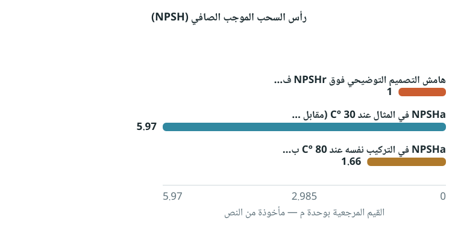

رأس السحب الموجب الصافي (NPSH)
Net Positive Suction Head
الفارق بين الضغط المطلق عند مدخل الرفّاص وضغط بخار السائل، مقيسًا بعمود السائل؛ إن كان الفارق صغيرًا أو سالبًا ظهر التهوّي، ولذلك يُقارن المتاح من التركيب بالمطلوب من المصنّع مع هامش.
NPSH ليس ضغطًا يُقاس بمقياس جوي مباشرة، بل هامش فوق ضغط البخار: يُطرح ضغط البخار من الضغط المطلق المتاح عند مدخل الرفّاص، ويُحوَّل الفارق إلى ارتفاع عمود السائل. وله وجهان لا يُخلطان: NPSHa (available) ما يوفّره التركيب — ضغط الخزان أو الجو مضافًا إليه ارتفاع السائل الساكن ومطروحًا منه فقد الاحتكاك في أنبوب السحب — و NPSHr (required) ما تطلبه المضخة عند تدفق معيّن، ويقيسه المصنّع على الماء البارد وينشره على منحنى. التشغيل الآمن يشترط أن يكون المتاح أكبر من المطلوب، والهامش الإيجابي هو السمك الذي يغطي ما لا يدخل الحساب: تغيّر منسوب الخزان، وتقادم الأنابيب، وارتفاع حرارة الصيف، والتشغيل العابر. ودقة الحساب كلها في شرطين: استخدام الضغط المطلق لا الجوي، واستخدام درجة حرارة التشغيل الأعلى لا المتوسطة.
كيف تعمل الظاهرة؟
الفيزياء بسيطة والحساب هو ما يُخطئ فيه الناس: الضغط المطلق عند مدخل الرفّاص يتحدّد بضغط المصدر (جو أو خزان مضغوط)، مضافًا إليه ارتفاع السائل فوق المدخل، ومطروحًا منه فقد الاحتكاك في الأنبوب والفittings، ثم يُنقص منه ضغط البخار. حين يصبح الناتج قريبًا من الصفر تكون أدنى نقطة ضغط في المضخة قد وصلت إلى ضغط البخار، فتبدأ الفقاعات. وليس المطلوب من التركيب أن يوصل الضغط إلى الصفر بل أن يبقى فوق NPSHr بفارق يغطي التشغيل الواقعي.
العلاقة بالأرقام
أوضح أثر في الحساب هو أثر الحرارة: في المثال المنشور، رفع حرارة الماء من 30 إلى 80 °C رفع ضغط البخار من 4.247 إلى 47.414 kPa، فانخفض NPSHa من 5.97 م إلى 1.66 م دون أي تغيير في الأنابيب أو المنسوب — أي أن التركيب صار غير مطابق وهو كما هو. وهذا يفسّر الشكوى المتكرّرة: مضخة لا تتهوّى شتاءً وتتهوّى صيفًا. ولهذا تُبنى الحسابات على أقصى حرارة تشغيل، وعلى أقصى تدفق أيضًا لأن NPSHr يرتفع بارتفاع التدفق.
مفاهيم متقاربة
ثلاثة أرقام تُخلط دائمًا: NPSHa (التركيب) وNPSHr (المضخة عند التدفق) وNPSH3 (نقطة الاختبار التي انخفض عندها الرأس 3%). العلاقة الصحيحة: NPSHa ≥ NPSHr + هامش، والهامش يتبع تطبيق المستخدم في ANSI/HI 9.6.1 لا قاعدة واحدة. أما سرعة السحب النوعية Nss فمؤشر شكل هندسي: قيمها العالية تعني مدخلًا واسعًا حساسًا للتدفق، ولذلك يُشترط البقاء تحت حدّ إرشادي لتجنّب عدم الاستقرار.
حدود التطبيق
الحساب يسقط في حالات: خزان مغلق أو مضغوط حيث يلزم الضغط المطلق الحقيقي؛ سائل غير الماء أو مخلوط يلزمه ضغط بخار وكثافة السائل الفعليَّين؛ خزان صغير أو سرعة سائل ملحوظة في الخزان؛ وسوائل لزجة أو غازية مذابة تحتاج تصحيحًا لا معادلة الماء البسيطة. كما أن NPSHr المنشور مقيس على الماء البارد، والسوائل الأخرى قد تختلف شدّة تهوّيها اختلافًا كبيرًا.

| الكمية | القيمة | المصدر |
|---|---|---|
| هامش التصميم التوضيحي فوق NPSHr في المثال المنشور (الحساب الفعلي يتبع ANSI/HI 9.6.1 طبعة 2024) | 1.0 م | [1] |
| NPSHa في المثال عند 30 °C (مقابل NPSHr = 4.0 م) | 5.97 م | [1] |
| NPSHa في التركيب نفسه عند 80 °C بعد ارتفاع ضغط البخار إلى 47.414 kPa | 1.66 م | [1] |
| الحدّ الإرشادي لسرعة السحب النوعية Nss (بـgpm أمريكي) لتجنّب التهوّي وعدم الاستقرار | 9000 — | [2] |
| NPSHr الناتج في المثال المنشور عند Nss = 9000 لتدفق 1000 gpm ورأس 500 قدم وسرعة 3000 دورة/دقيقة | 23 قدم | [2] |
المصادر
- 1 NPSHa vs NPSHr: how to calculate NPSH and what margin to use — HydroPumps — Engineering Guide. hydropumps.com.br/en/guides/npsh · اطُّلع عليه 2026-11-28
- 2 Pumps — Suction Specific Speed — The Engineering ToolBox. www.engineeringtoolbox.com/suction-speed-pumps-d_638.html · اطُّلع عليه 2026-11-28
استشهد بهذا المصطلح
الصيغتان مبنيتان من بيانات الصفحة نفسها: العنوان والتاريخ ورابط النسخة المنشورة.
رأس السحب الموجب الصافي (NPSH) — Net Positive Suction Head. (2026). ديوان المعرفة — انفراد. https://infiradev.com/diwan/terms/term-net-positive-suction-head.html
@misc{term-net-positive-suction-head2026,
title = {رأس السحب الموجب الصافي (NPSH)},
titleaddon = {Net Positive Suction Head},
howpublished = {{ديوان المعرفة — انفراد} — مرجع علمي عربي},
year = {2026},
url = {https://infiradev.com/diwan/terms/term-net-positive-suction-head.html},
urldate = {2026-11-28},
note = {مراجعة علمية: Abdullah Al-Huwaidi}
}
راجعه: Abdullah Al-Huwaidi · 2026-11-28 · آخر تحديث 2026-11-28